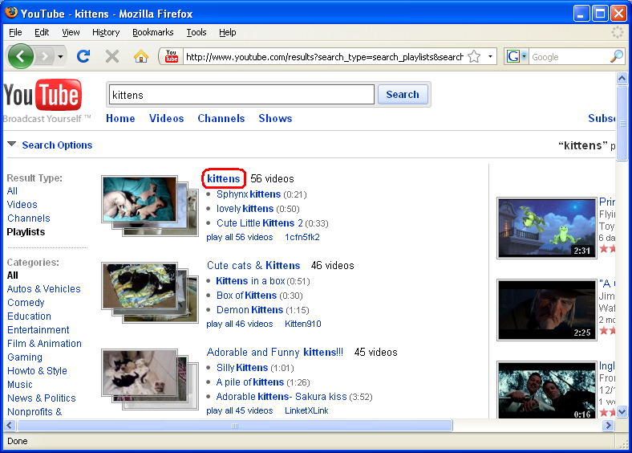

Loading...
- Choose another movie
- Pause
- Go to beginning
- Go back 10 seconds
- Go forward 10 seconds

Welcome to Accessible YouTube, an interface to YouTube designed for people who access their computers via either 2 switches or a mouse. It allows the user to use two keys/switches or a mouse to navigate through a list of videos, and watch any or all of them. Currently the list of videos can be a playlist, the results of a video search, the related videos for a particular video, or YouTube's most popular videos.
Note the little home icon in the upper left corner of the page. Clicking it will bring you back here.
Warning: This interface allows unfiltered access to YouTube videos, some of which are not appropriate for all viewers.
Ready to get started?
Please send comments and suggestions to ayt-comments@cs.unc.edu. Thanks!
Here you can customize your settings for Accessible YouTube. You can also access specific lists of movies stored in YouTube playlists. Note: you must have cookies enabled for the settings to be saved.
To turn off some of the more advanced player options, uncheck the corresponding boxes below.
To watch videos from a playlist, go to YouTube, find the playlist you want to watch, click through to the "View Playlist" page, and copy the Permalink URL into the box below. Then click Go. For more detailed instructions, click here.
These instructions describe how to get the right URL from YouTube to watch videos from a playlist in Accessible YouTube.
Go to www.youtube.com. Find the main search bar, enter your search terms, and click "Search".
We want to narrow our search down to just playlists, so click "Playlists".

Find the playlist you want and click on its title.

Copy the URL in the "Playlist/URL (Permalink)" box. That's the one you want.